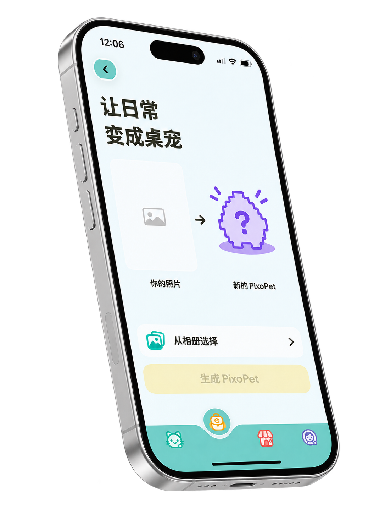
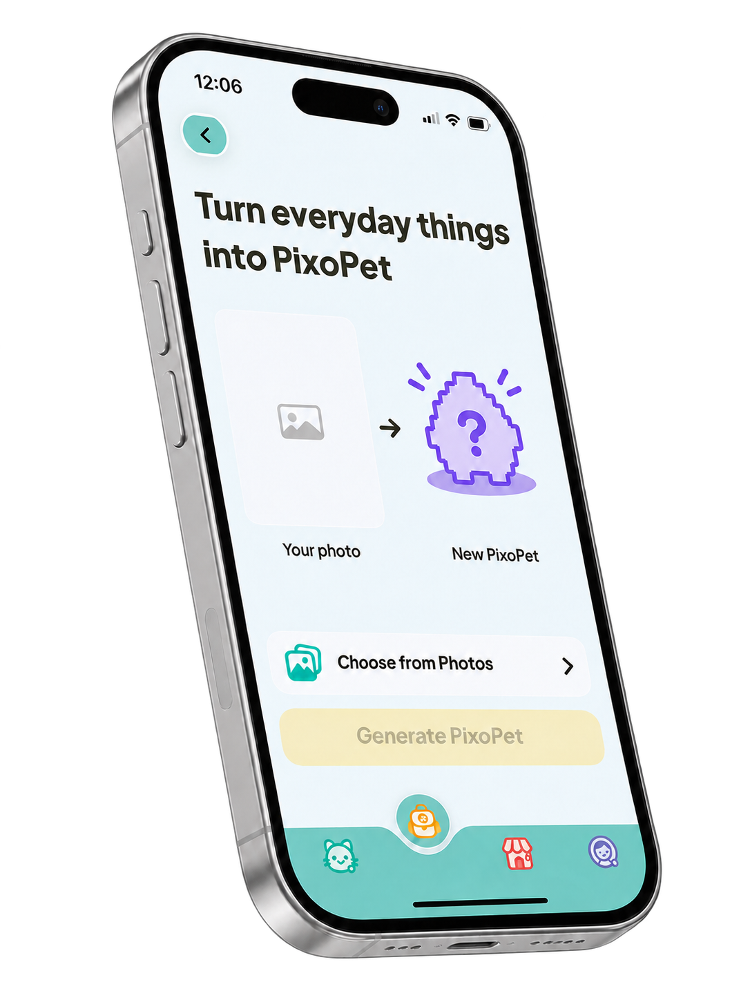
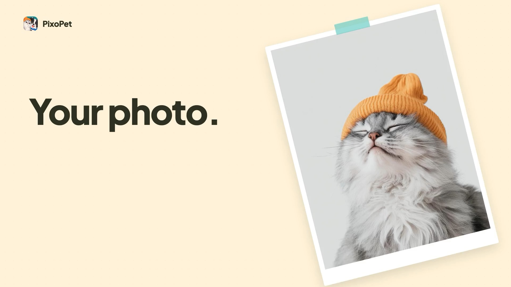
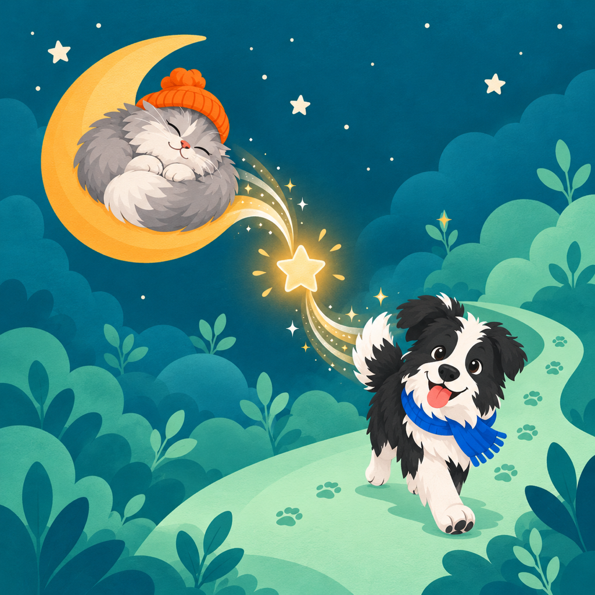
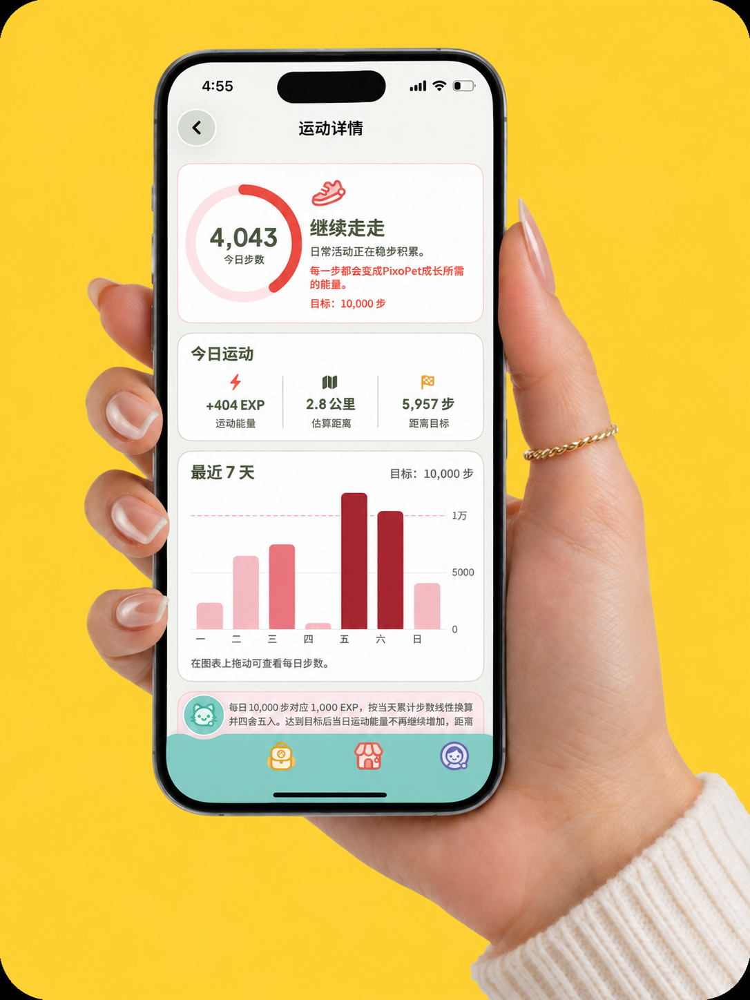
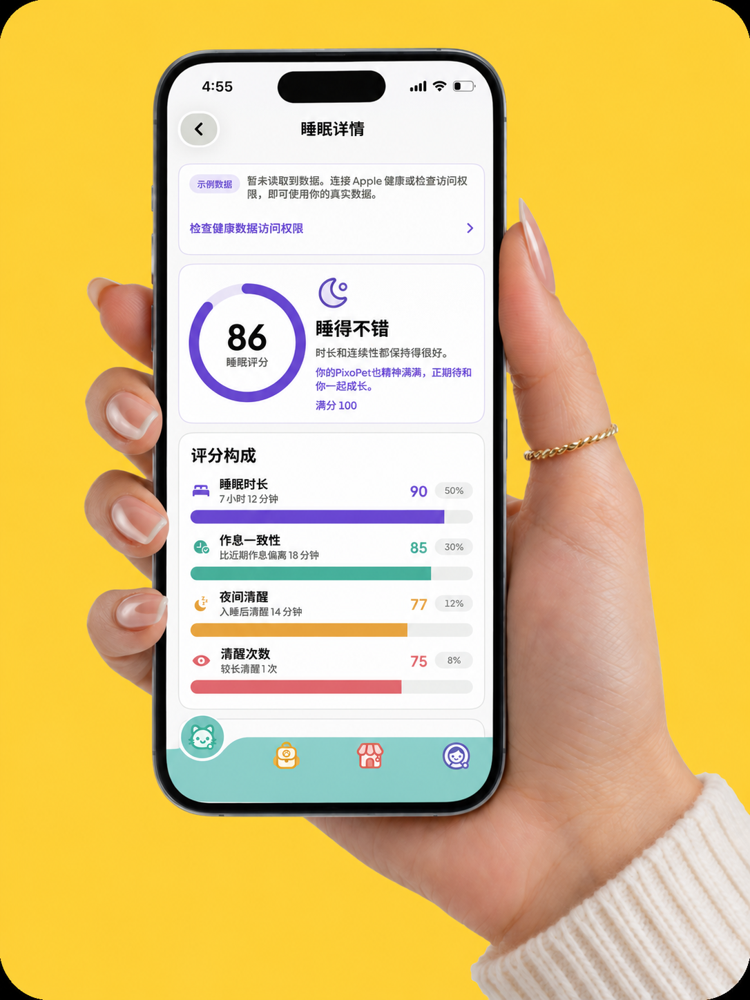
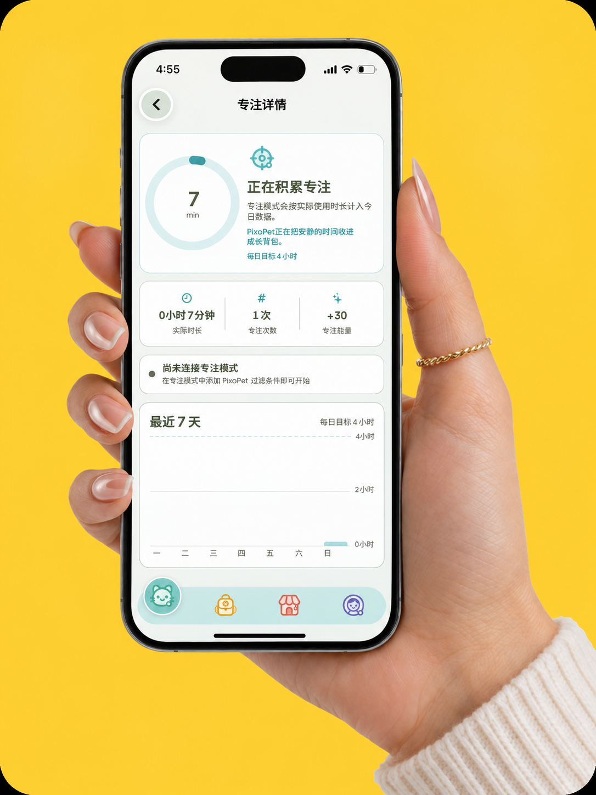

A New Era of Digital Companionship


Live Better
Grow Faster
Turn sleep, focus, and movement into energy for a digital companion that grows with you.
#1 Pet App Powered by Your Real Life
Featured on the App Store in
171 countries & regions
100% Your Pet, 100% Your Story

01 HOW IT WORKS
Built around the life
you already live
PixoPet works with the routines you already have. There is no extra system to manage and no new habit to maintain.




02 DAILY ENERGY
Your day becomes
visible progress
No extra check in required. PixoPet brings sleep, focus, and movement together so you can see how your everyday activity contributes to growth.
03 SHARED MEMORIES
A record of
how far you have come
Walks, milestones, and everyday moments gradually become a visual record of the time you have spent together.
Cloud Post Office
A small moment from today, saved for later.
Moonlight camp
Forest nap
A FAVORITE
DAY
DAY
“
We went further than expected today and kept the moment with us.
JUNE 1204 FROM PEOPLE USING PIXOPET
What keeps people coming back
ZeqianCreator
I did not want health data to feel like another report card. I wanted it to become something you could understand through a relationship that changes over time.
BarneyCreator
Most health apps focus on what you should have done. We wanted to recognize what you already did and give that effort somewhere meaningful to go.
太空有点闲App Store reviewer
Love the app! Just a couple of ideas: please let us unlock the same achievement more than once, and add a way to undo an unlock if it happened by accident. It’d also be great if sharing generated a scrapbook link so friends could enjoy these fun moments too.
雨天出行便出行方式App Store reviewer
This app has a great design and is perfect for recording life events. I’d especially like to create custom categories, or rename the ones already in the app—that would make it much more fun to use.
5797650App Store reviewer
After a rough breakup, I realized I needed to enrich my life and start a journey of self-improvement. Now I record the things I’ve never done, never thought of, or didn’t dare to imagine. The app is a joy to use—thank you to the developers!
南一哇App Store reviewer
I’d been thinking about keeping track of my little “highlights” and things I’m looking forward to experiencing. I never expected someone would actually make an app like this—it was a real surprise. The interface is clean and beautiful, and it feels great to use.
05 FAQ
A few things you might be wondering
The useful details, without the fine-print maze.
What exactly is PixoPet?
PixoPet turns everyday activity such as sleep, focus, and movement into energy for a digital companion that grows with you.
Do I need to log everything myself?
No. PixoPet is designed to work with activity you already track on your iPhone, after you choose to grant access. There is no extra daily check in to maintain.
What health data does PixoPet use?
The experience is built around sleep, focus, and movement data. You choose which supported categories to share, and you can manage those permissions from your iPhone.
How will my data be handled?
PixoPet will only access supported data after you grant permission. Full storage, processing, and privacy details will be published before the app is released.
Which devices will PixoPet support?
We are preparing the iPhone version first. Support for other platforms has not been announced yet.
Is PixoPet available now?
Yes. PixoPet is available for iPhone now.
Is PixoPet a medical or diagnostic app?
No. PixoPet is a companion experience for reflecting on everyday activity. It is not intended to diagnose, treat, or replace professional medical advice.
Download PixoPet
PixoPet is available now on iPhone.